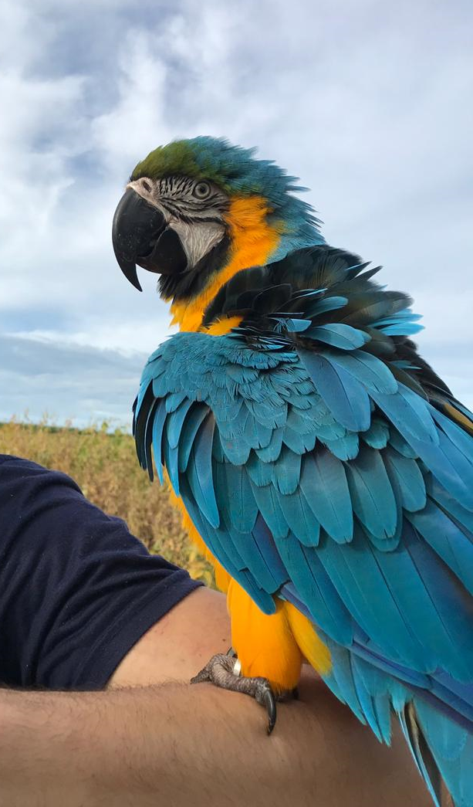
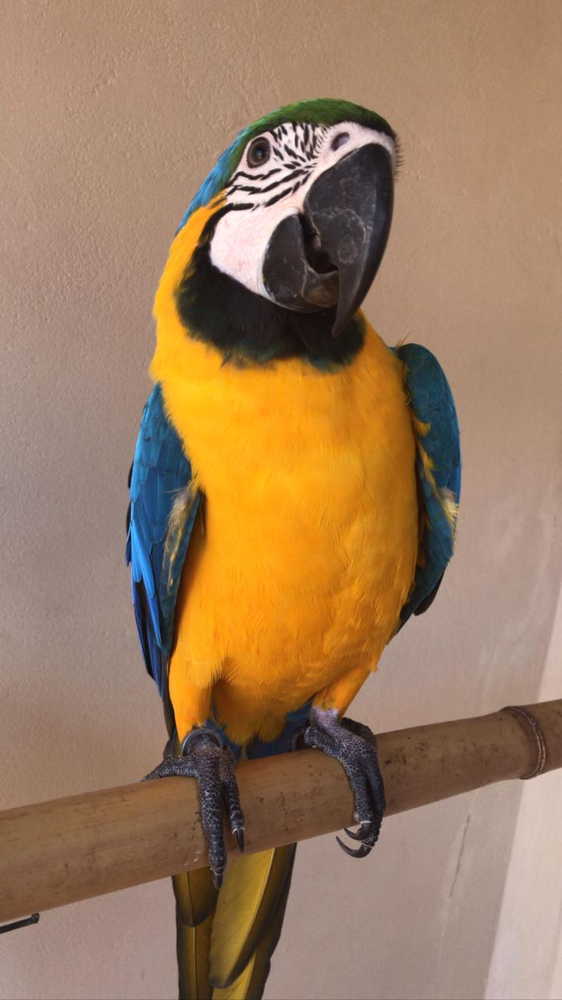
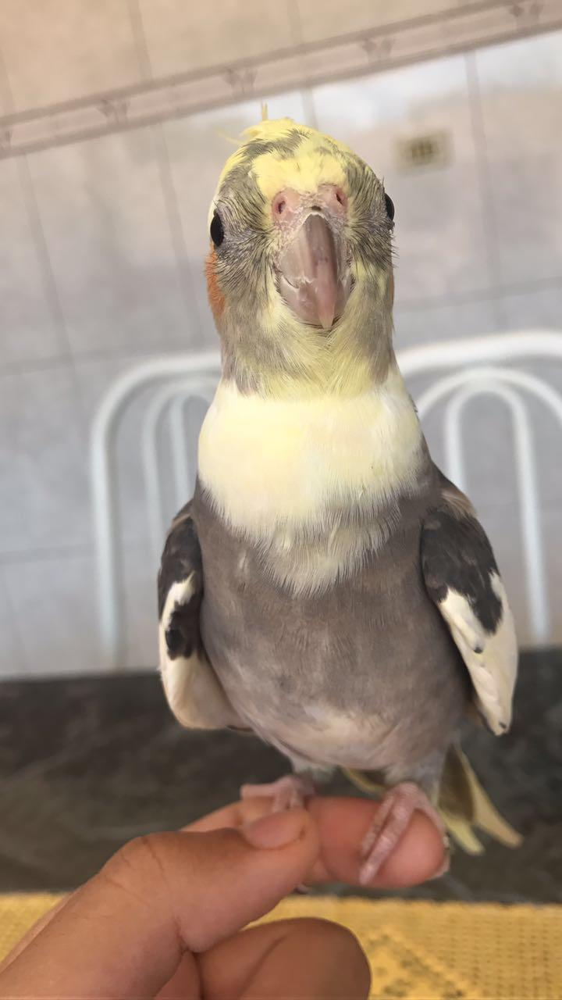

Pets
Fantásticos
- 
- 
- 
-

Cacau
Uma arara que tem uma personalidade pra lá de forte, tudo que ela quer, ela consegue. Cacau vive querendo chamar a atenção mas odeia visitas, quando aparece alguma criança e ela está no chão logo se vê a criança correndo e ela atrás 😅.
Cacau ama ficar no ombro, dar beijos e jogar as coisas pro chão, toda semana ela quebra alguma coisa diferente.
Ela é muito inteligente, manipula o Caju e até tenta manipular os adultos, há dias que ela finge chorar pra receber uma atenção dobrada ou então ela começa a querer dar beijo sem parar pra não desviarmos o foco dela... essa Cacau um dia dominará o mundo!
Caju
Cajuzinho é um bebê, ele é muito manhoso e carinhoso, vive pedindo carinho pra sua amiga Cacau mas nem sempre isso acontece, pois ela é um pouco brava. Tudo que a Cacau faz ele tenta imitar, até aprendeu a gritar o nome dela em vez do dele.
Caju ama balançar, comer, receber carinho e passear de carro, se ele fosse uma pessoa seria aqueles caras gente boa que tem em todo churrasco pois pra ele nunca há tempo ruim.
Rex
O Rex é um cachorrão que possui dupla identidade, há quem o chame de Nick e há quem o chame de Rex mesmo. Ele é um idoso que parece novo, é muito alegre, bobão, brincalhão e às vezes metido. Ele ama passear à noite, comer um petisco e sair pra tomar banho toda semana, acho que ele é um dos cachorros mais mimado do petshop.
Além de petiscos, ele ama comer melancia e laranja, até muda a feição do rostinho parecendo um cachorro abandonado pra ganhar as coisas... ele é muito esperto e danado!
Grudinho
Era um amor de calopsita, vivia recebendo bicadas da Florinda mas ainda insistia em fazer amizade. Foi a calopsita mais apegada que tivemos, tudo que iríamos fazer ele tinha que estar junto em cima do ombro. Grudinho era engraçado, não gostava de ficar sozinho. Ele tinha um probleminha nos dedinhos do pé, sempre que precisava subir em alguma coisa e não conseguia, ficava gritando do chão pedindo ajuda enquanto a Florinda seguia caminho deixando o coitado pra trás 😅
Grudinho e Florinda viviam entre tapas e beijos mas nunca separados, sentimos muita falta da época em que vivemos com ele, sem dúvidas fomos felizes.
Florinda
Uma calopsita misteriosa, o vendedor nos disse que era fêmea mas até hoje eu e minha namorada suspeitamos. Ela e o Grudinho eram pra ser um casal mas ela tinha uma personalidade muito forte (e vai saber se não era macho mesmo). Florinda ou Florindo tinha seus territórios que ninguém podia invadir, apesar de ser bravinha, ela era alegre e muito engraçada, amava um passeio no ombro, um carinho, uma comidinha diferente, era curiosa é muito esperta.
Florinda adorava cantar a noite quando todo mundo estava dormindo, acho que ela sabia que não podia e cantava mesmo assim. Com seu jeitinho único, hoje Florinda faz muita falta.